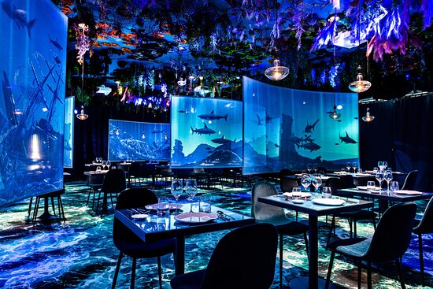

Rest'Eat: Tous les restos à proximité du campus des Grands Moulins de l'université de Paris Cité
Bienvenue sur notre site dédié aux restaurants à proximité de l'université !
Si vous êtes étudiant ou membre du personnel de l'université, vous savez à quel point il peut être difficile de trouver un lieu de restauration qui répond à vos grosses ou petites faims. C'est pourquoi nous avons créé cette plateforme pour vous aider à découvrir les restaurants du quartier. Que vous cherchiez un endroit rapide pour emporter un repas entre deux cours ou un lieu confortable pour déguster une cuisine de qualité, nous avons des suggestions pour tous les goûts et tous les budgets. Nous avons sélectionné pour vous les restaurants les plus populaires auprès des étudiants et du personnel de l'université, et nous avons rassemblé toutes les informations nécessaires pour vous aider à choisir le restaurant qui correspond le mieux à vos attentes.
Si vous ne savez pas quoi manger, faites nous confiance et cliquez sur "Une Petite Faim" (un restaurant sera tiré aléatoirement dans notre base de données) !
Si vous êtes étudiant ou membre du personnel de l'université, vous savez à quel point il peut être difficile de trouver un lieu de restauration qui répond à vos grosses ou petites faims. C'est pourquoi nous avons créé cette plateforme pour vous aider à découvrir les restaurants du quartier. Que vous cherchiez un endroit rapide pour emporter un repas entre deux cours ou un lieu confortable pour déguster une cuisine de qualité, nous avons des suggestions pour tous les goûts et tous les budgets. Nous avons sélectionné pour vous les restaurants les plus populaires auprès des étudiants et du personnel de l'université, et nous avons rassemblé toutes les informations nécessaires pour vous aider à choisir le restaurant qui correspond le mieux à vos attentes.
Si vous ne savez pas quoi manger, faites nous confiance et cliquez sur "Une Petite Faim" (un restaurant sera tiré aléatoirement dans notre base de données) !
TRIER:

Ephemera Restaurant
160 Av. de France, 75013 Paris

La Felicità
5 Parv. Alan Turing, 75013 Paris

La Barge du CROUS de Paris
Quai François Mauriac, Port de la Gare, 75013 Paris